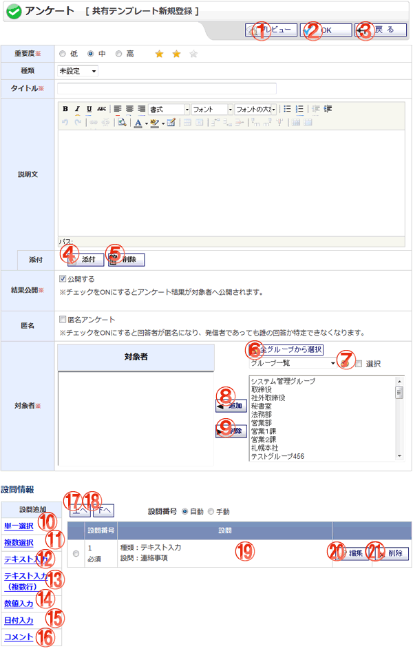

アンケート テンプレート新規登録画面です。

機能説明
プレビューボタンプレビュー画面に遷移します。作成中のアンケートが、回答画面でどのように表示されるかを確認します。 |
OKボタンテンプレート登録確認画面へ遷移します。入力内容に不備がある場合、エラーメッセージが表示されます。 |
|---|---|
戻るボタン遷移元の画面へ遷移します。 |
添付ボタンアンケートに添付ファイルを追加します。添付ファイル追加ポップアップ画面を表示します。 |
削除ボタンアンケートに追加した添付ファイルを削除します。 |
全グループから選択ボタンポップアップで全グループから選択画面が開きます。ユーザーまたはグループを選択し、適用ボタンを押すと、選択したユーザー・グループが選択ユーザー・グループ欄に表示されます。 |
グループボタンポップアップでグループ選択画面が開きます。グループ選択画面でグループをクリックすると、クリックしたグループが選択グループに表示されます。 |
追加ボタンユーザーリストで選択されているユーザー・グループを、対象者リストへ追加します。 |
削除ボタン対象者リストで選択されているユーザー・グループを、対象者リストから除外します。 |
設問追加 単一選択リンク設問種類[単一選択]の追加画面に遷移します。 |
設問追加 複数選択リンク設問種類[複数選択]の追加画面に遷移します。 |
設問追加 テキスト入力リンク設問種類[テキスト入力]の追加画面に遷移します。 |
設問追加 テキスト入力(複数行)リンク設問種類[テキスト入力(複数行)]の追加画面に遷移します。 |
設問追加 数値入力リンク設問種類[数値入力]の追加画面に遷移します。 |
設問追加 日付入力リンク設問種類[日付入力]の追加画面に遷移します。 |
設問追加 コメントリンク設問種類[コメント]の追加画面に遷移します。 |
上へボタンラジオボタンで選択されている設問を、一つ上へ移動します。 |
下へボタンラジオボタンで選択されている設問を、一つ下へ移動します。 |
設問情報アンケートの設問情報一覧を表示します。 |
設問 編集ボタンアンケート設問の編集画面へ遷移します。 |
設問 削除ボタンアンケートの設問を削除します。 |
表示・入力項目説明
重要度
アンケートの重要度を選択します。
種類
アンケートの種類名を選択します。
タイトル
アンケートのタイトルを入力します。
説明文
アンケートの説明文を入力します。
添付
添付したファイル名を表示します。
位置
追加した添付ファイルの位置を選択します。「上」を選択すると説明文の上部に、「下」を選択すると説明文の下部に表示します。添付ファイルが存在するときだけ設定できます。
結果公開
アンケートの結果公開区分を選択します。結果公開アンケートは、他人の回答データを閲覧することができます。
匿名
アンケートの匿名を選択します。匿名アンケートの場合、結果確認で回答データのみ閲覧することができ、回答者名は非表示となります。
対象者
アンケートの対象者を、ユーザーリストから選択し追加します。
設問番号
アンケートの設問番号設定区分を選択します。「手動」を選択すると、設問追加・編集画面で任意の番号を入力することができます。